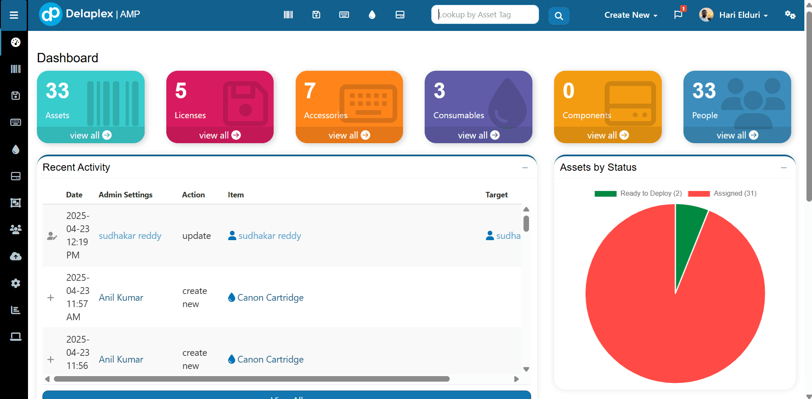

PIM Software Development
Python, FastAPI, and AWS helped replace a costly tool and improve data work.
Read the case studyPrepared for Manish Sachdeva
Saw your Backend Service Engineer search across Europe. It reads like a platform scale push for Python, AWS, search, APIs, and GenAI work.

The Backend Service Engineer role points to a platform scale push. Delaplex AMP already promises AWS hosting, REST API work, device integrations, IoT data, and frequent updates. That creates pressure on backend services, search, events, and test coverage. If this stays with one senior hire, roadmap and client work can fight for the same people. The risk is slower demos, fragile integrations, and more load on your core team.
AMP sends demo traffic to a separate host. We would first check redirects, DNS, and blocked states so buyers always land on a clear request path.
The AMP page carries a heavy marketing stack before the pitch is ready. A light campaign page could help demo traffic move faster.
We would run a six-week pilot with weekly demos and a clear handoff.
Map AMP API, demo routing, and hiring backlog into a two-sprint risk list your team can own.
Harden Python and FastAPI services with load tests, contract tests, and clearer observability for client work.
Tune AWS, SQS, containers, and Elasticsearch paths that affect data sync and search speed for AMP.
Ship weekly demos with your product owner, then leave playbooks for scale, support, and handoff.
Python, FastAPI, and AWS helped replace a costly tool and improve data work.
Read the case study
AWS, Elasticsearch, Node.js, and React reduced manual testing effort for teams.
Read the case study